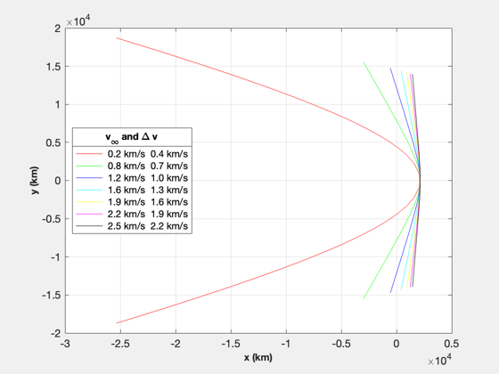

Analyze hyperbolic flyby of Pluto
rE = Constant('equatorial radius pluto');
mu = Constant('mu pluto');
h = 1000;
hC = 100;
[a,e] = RPRA2AE(rE+hC,rE+h);
vEll = VOrbit(rE+h,a,mu);
rP = rE + h;
vEsc = VEscape( rP, mu );
vEnc = linspace(1.07,3,7)*vEsc;
vInf = sqrt(vEnc.^2 - vEsc);
r = zeros(3,100,length(vInf));
for k = 1:length(vInf)
a = -mu/vInf(k)^2;
e = 1 - rP/a;
f = 0.9*acos(-1/e);
m = Nu2M(e,f);
m = linspace(-m,m);
for j = 1:length(m)
el = [a 0 0 0 e m(j)];
r(:,j,k) = El2RV( el, [], mu );
end
end
NewFig('Pluto flyby')
c = 'rgbcymk';
s = cell(1,length(vInf));
for k = 1:length(vInf)
plot(r(1,:,k),r(2,:,k),c(k));
s{k} = sprintf('%4.1f km/s %4.1f km/s',vInf(k),vEnc(k)-vEll);
hold on
end
LegendWithTitle(s,'v_\infty and \Delta v','location','west');
grid on
XLabelS('x (km)');
YLabelS('y (km)');
